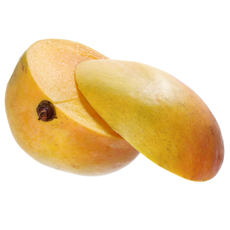

Apple Mango - Ripe
Sweet, juicy Apple Mangoes hand-picked for freshness. Perfect for juicing, snacking, or fruit salads. Naturally ripened and delicious.
Enjoy the rich sweetness of Kenyan Apple Mangoes — naturally ripened, aromatic, and hand-picked for the best quality. These mangoes are perfect for smoothies, snacking, fruit salads, or fresh juice. Every piece is carefully selected to ensure freshness, firmness, and full flavor.